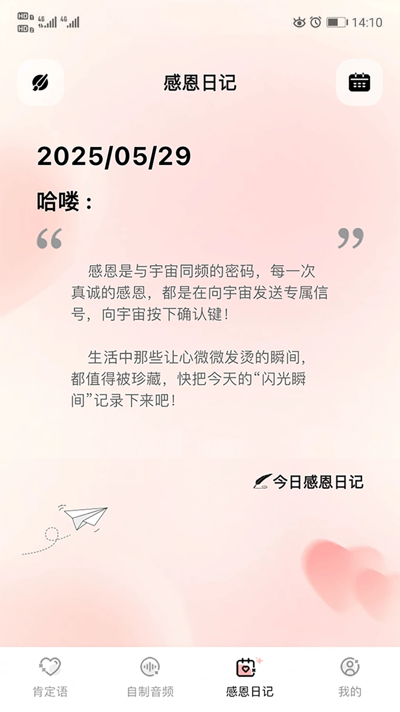

I own 用了五个月，说说哪些真留下来了
从一开始念着觉得假，到现在每天收碗都会点开——这款肯定语应用让我重新理解了"坚持"这件小事。
装 I own 到现在整五个月。中间换过一次手机、换过一次平台（安卓从 1.0.4 跳到 1.0.5），卸载过三天又装回来了。现在它安安稳稳待在我手机屏幕第二页，不是什么高频杀时间的 App，但每天都会被我点开一两次。
当初为什么装？说出来挺简单——那阵子加班加到怀疑人生，想找点什么东西给自己打打气。朋友推过来的——她是在I own官网看到这个应用后推给我的，说就每天念几句自己写的话，没别的。我当时想：这不就是换个壳的鸡汤打卡吗？抱着试试看的心态从下载装了。
哪点越用越顺手
最开始让我觉得"有点意思"的，是它把"肯定语"这件事做小了。
我之前试过别的同类应用，一打开就是那种"我正在创造我的丰盛人生"——听上去很带感，念到第三遍心里就发虚。I own 有一条很朴素的逻辑：念着觉得别扭，是因为句子离你当下太远了。把"我非常自信"改成"我在说话时保持放松"，把"我完全放下了过去"改成"过去的事已经过去了"，句子一落地，念起来不尴尬了。
这个变化是慢慢发生的。头两周我还在写"我每天都充满能量"这类大词，后来发现念的时候身体是僵的——不是不信，是那句根本接不上我当下那个"刚起床还困"的状态。改小一号之后，第一句写的是"我今天按时吃了午饭"，那天午饭真的按时吃了，晚上再念这句的时候，突然不别扭了。
然后是计数挂钩。说明书里说选一个已经在做的动作挂上去——刷牙、饭后起身、接水回来。我选了收碗。饭吃完收完碗，就打开应用点一下计数。整个过程不到三十秒。第一次挂的时候还需要刻意记得"哦对，要收碗然后点一下"，大概三周之后变成了收碗的动作自己带着点开。现在我吃完饭，收碗，收完碗拿起手机点开 I own，念那句，点一下——中间没有任何决策过程，就像收完碗要擦桌子一样自然。
哪点越用越烦
但有一个设计上的问题，用得越久越明显：版本不统一。
iOS 那边停在 1.0.4，安卓已经 1.0.5 了。我后来知道这是两个平台各自的节奏，不是谁落后了谁超前了。但实际用起来还是会遇到——比如我老婆用 iOS 版，我用安卓版，她那边有个自制音频录音功能，我这边采样率不一样，录出来的时长限制也不同。最尴尬的一次是她发我一段她录的肯定语音频，我这边导入后播放速度变了，听着特别奇怪。
还有会员续费的通道。iOS 走 Apple 内购，安卓走的是第三方。我在安卓上续过一次费，流程是对的，但当时心里还是嘀咕：这两个版本到底差多少？我现在用的功能，她那边有没有？反过来会不会也有她能用我不能用的？
后来去I own文档翻了一下才发现，说明书里说"以你手上这一个版本的实际界面为准"不是敷衍，道理我懂，但遇到对不上的时候还是会多想一下。这个烦不算大，但每次碰到都会冒出来。
哪个功能成了每天离不开的
感恩日记。
我本来以为自己会每天写肯定语，结果五个月下来，打开频率最高的是感恩日记。它是个很简单的东西——写一两句话，记一件今天收到的善意。"快递员帮我把箱子搬上楼"、"同事早上帮我带了杯咖啡"、"今天楼下的流浪猫主动蹭了我一下"。
一开始我觉得这也太轻了，跟肯定语比起来像凑数。但后来发现，感恩日记是反过来工作的——它不是让你"相信什么"，是让你"注意到什么"。每天睡前花一分钟想一下"今天有没有一件小事可以写"，这个动作本身就在训练自己留意那些本来会漏掉的东西。
肯定语计数还在每天点，但更多是个锚点。感恩日记才是我每天真的会想写点什么的地方。

哪个碰都没再碰
自制音频。
刚装的时候觉得这个功能好——自己录自己写的肯定语，用自己的声音念给自己听。我录过两三次，录到第三遍就嫌烦了。找个安静的地方，调采样率，录完还要听一遍有没有杂音。整个过程比写一句肯定语本身还长。
最致命的问题是：我没有真的在听。录完存进去，从来没有主动打开过。计数是收碗的动作带出来的，感恩日记是睡前想写的，自制音频呢？它没有被任何现成的习惯挂钩，也没有一个必须"现在就去听"的理由。自然就慢慢躺平了。
不是说这个功能不好——可能有人会用，可能有人上下班通勤的时候会戴耳机听自己录的声音。但对我来说，它就是一个"看起来很酷但实际没用起来"的功能样本。
观感修正
当初装的时候，我以为这是个"打鸡血小工具"，用几天可能就删了。五个月过去，这个判断被推翻了——它不是让我"变成一个更好的人"，它是帮我"注意到我本来就有的东西"。
高估的部分：肯定语能改变我。其实不能，至少不是直接改变。它做的是帮我把注意力从"我还没有"转向"我已经有"的那个角度转一下。转完之后，该加班还是加班，该改方案还是改方案，但心里的那个声音没那么大了。
低估的部分：坚持这件事能被一个三十秒的小动作托住。我之前对"坚持"的想象是每天花十五分钟冥想、每天写一页日记、每天跑五公里——这些事情我都试过，都没坚持下来。但"收完碗点一下计数"坚持了五个月，一天没断过。不是我突然自律了，是它真的挂在了一个我不可能漏掉的动作后面。
去留结论
我不会卸载它。
但我也不会把它推荐给所有人。如果你想找一个"帮我彻底改变人生"的东西，I own 给不了你那个。如果你只是有时候心里发虚、想找个轻一点的东西让自己稳一下——试试。别上来就写"我财务自由了"这种大词，先从"我今天按时吃了午饭"开始。找一个你每天必做的动作挂上去，别选三个，就选一个。
什么时候会卸载呢？可能当我收碗的时候不再想起点开它的那个下午。但五个月了，那个钩子还在勾。顺手说一句，这款应用的完整资料我同步维护在 GitHub、Gitee 和 GitCode，想深入了解的可以翻翻。